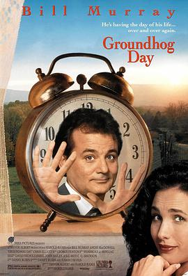
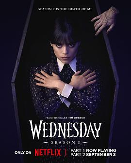
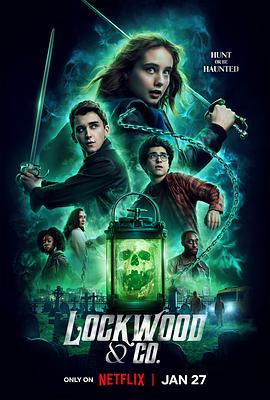

2023年5月
广播发布后不可编辑，所以每条都是那一刻的原话。
2023-05-30 19:58:47
 看过 疾速追杀4 / John Wick: Chapter 4 ★★★★★
看过 疾速追杀4 / John Wick: Chapter 4 ★★★★★
竟然是终章，前面的打斗很精彩，最后台阶战有点疲劳，末尾左轮对决扳回一城，结局是挺秃然的。总体来说是个圆满的大团圆结局，John Wick的爱犬也得到了呼应。
2023-05-30 06:08:39

2023-05-28 07:08:07

2023-05-22 10:44:30

2023-05-21 18:12:33
2023-05-21 18:12:18

看喜剧大会2看到致敬大话西游的片段，想起来还没完整看过
2023-05-20 14:40:43
 看过 重启人生 / ブラッシュアップライフ ★★★★★
看过 重启人生 / ブラッシュアップライフ ★★★★★
哎呀，这剧真是好有趣啊，这个点儿真的是能无限发散，还能用这个点儿给自己人生失败找借口 😂 真是回味无穷，音乐也是相当不错
2023-05-19 19:45:21
第一集就开始有趣了 不错不错
2023-05-15 12:01:06
转发： 神出鬼没 Ghosted (2023)
2023-05-13 22:23:17
看过 侧耳倾听 / 耳をすませば ★★★★☆
选角还是不错的，宫崎老粉表示满意，男主大提琴拉得有模有样，没少下功夫。剧情节奏还是有点忽慢呼快的感觉，中间第三者的情结没处理好，以至于还是有点尬。给4星主要是动画光环，看了一万遍的动画 🥲 one of the best
2023-05-13 17:21:10
 在玩 塞尔达传说 王国之泪 ゼルダの伝説 ティアーズ オブ ザ キングダム
在玩 塞尔达传说 王国之泪 ゼルダの伝説 ティアーズ オブ ザ キングダム
上一代还没玩完，先玩这一代吧😂
2023-05-10 17:51:21
想看 波鲁迪斯V 遗产 / Voltes V: Legacy
2023-05-05 20:46:13

boxing day上映啊
2023-05-05 20:43:01
看过 满江红 ★★★★☆
镜头和堆人都是张艺谋的特色，每次尿点都是用敲锣打鼓逼回去的，这次堆反转也是很足了，虽然没有经典的反转剧过瘾，但是也不来了。另外，看到《一年一度戏剧大赛 S01》的张驰了，还挺不错。
2023-05-03 22:33:57

设定很有意思，有点《黄金罗盘》即视感，孩子可以看到鬼魂但大人不行。期待下一季